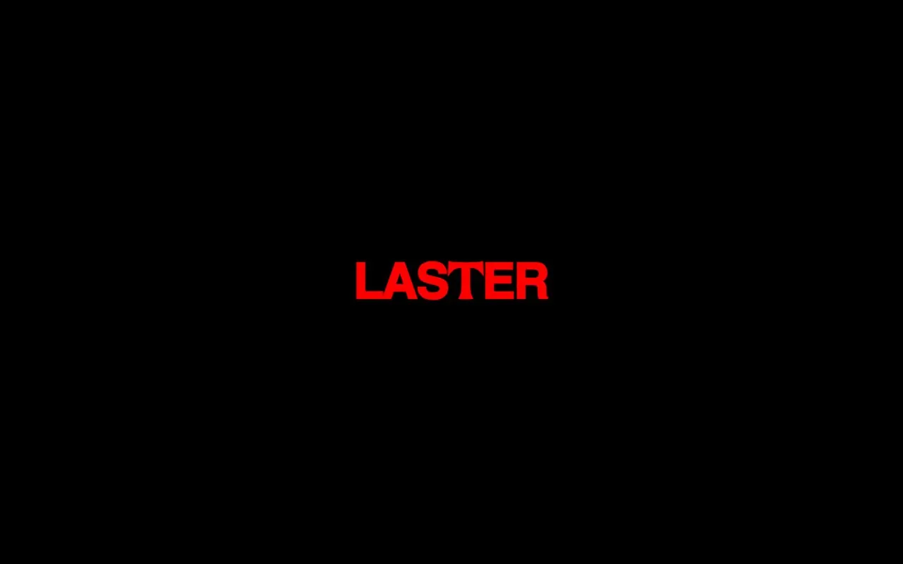
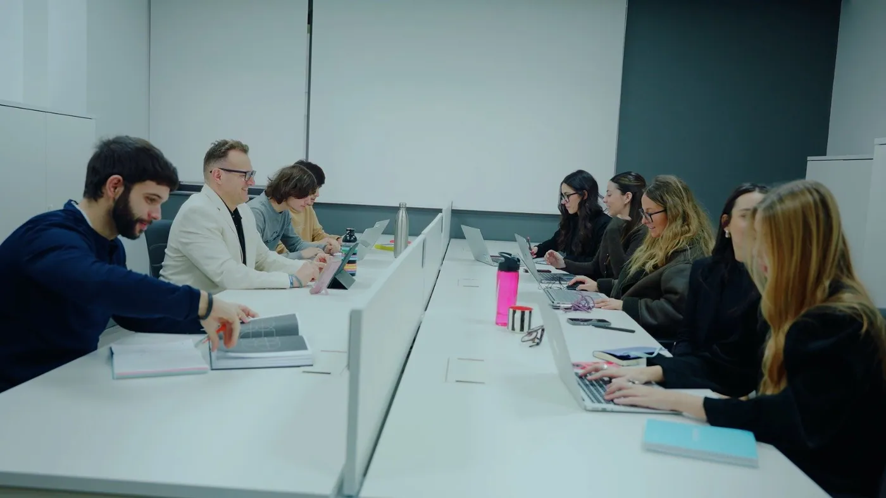
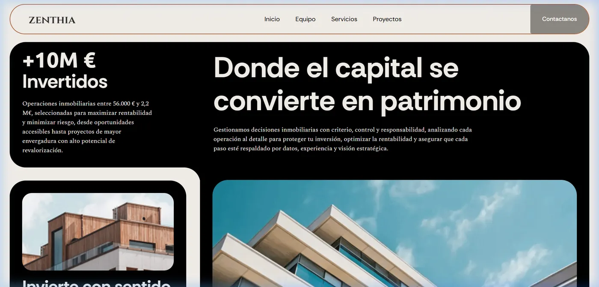

Webs corporativas en WordPress con temas y plugins a medida, y proyectos en React y Astro.
Rubén PérezBilbao, España
Desarrollador web
Desarrollador web
& AI Maker
Desarrollo webs y aplicaciones, y construyo integraciones y automatizaciones con IA para resolver tareas reales.
133
herramientas MCP
Las que mis conectores dan a Claude en 6 servicios
10
proyectos destacados
Webs, plugins, apps con IA y front-end
Claude, Gemini y ChatGPT
en mi día a día
Sobre mí
Rubén Pérez
De la web a la IA aplicada
Soy Rubén Pérez, desarrollador web con experiencia en proyectos para agencias y empresas. Hoy me centro en aplicar la inteligencia artificial al desarrollo de software, la automatización y las herramientas a medida.
Me gusta experimentar con tecnologías nuevas y convertirlas en herramientas que se usen de verdad: integraciones, automatizaciones y software útil para el día a día de los equipos.
Desde 2019
Desarrollando webs
Para agencias de marketing, consultoras y empresas
- WordPress
- React
- Astro
- Angular
- Laravel
- Node.js
Servicios
Lo que construyo para equipos y empresas
Claude y ChatGPT consultan datos y actúan en Calendly, tl;dv, Hostinger, Google Analytics, Toggl o el correo desde el chat.
No hacen falta más herramientas:
solo las que funcionan.
Claude Code, ChatGPT y Google Antigravity para analizar repositorios, construir funcionalidades y crear herramientas a medida.
No ofrezco un paquete cerrado: elijo la tecnología que encaja con cada proyecto, de una web en WordPress a una integración con IA.
Ver proyectosFlujos que conectan WhatsApp, correo y datos con IA: resúmenes, tareas y recordatorios automáticos.
Instrucciones y procedimientos que convierten asistentes generalistas en herramientas especializadas.
Stack técnico
Lenguajes
- HTML5
- CSS3
- SASS / SCSS
- JavaScript (ES6+)
- TypeScript
- PHP
Frameworks
- WordPress
- Angular
- React
- Astro
- Laravel
- Node.js
CMS & web
- Elementor Pro
- Divi
- ACF Pro
- Plugins a medida
- Temas a medida
Herramientas
- Git & GitHub
- Hostinger Cloud
- Google Analytics 4
- Search Console
- REST APIs & JSON
Proyectos
Proyectos
Proyectos
& soluciones reales
Una selección de webs corporativas, plugins y temas a medida, herramientas con IA y componentes front-end.

IA & Automatización / Node.js
WA Automator — WhatsApp + Gemini
Panel que conecta WhatsApp con Gemini: resume chats, extrae tareas, envía recordatorios y responde por ti en modo ocupado.
Node.js
Gemini
WhatsApp
MySQL
IA & Conectores MCP / Node.js
MCP Control — Conectores MCP para Claude
Hub de conectores MCP con el que Claude consulta y actúa sobre Toggl, Hostinger, Google Analytics, tl;dv, PageSpeed y el correo.
MCP
Claude
Node.js
APIs
Skills & Automatización
Skills Personalizadas & Flujos de Automatización
Diseño de instrucciones y procedimientos estructurados para adaptar asistentes de IA a tareas de desarrollo y procesos de equipo.
Skills IA
Claude Code
ChatGPT
Automatización
Claude + MCP

WordPress / Tema y Plugin a Medida
Audytax — Auditoría de Subvenciones
Web en WordPress con tema y plugin propios, desarrollada con Claude a través de mi conector MCP.
WordPress
Tema propio
Plugin propio
Claude + MCP

WordPress / Plugin a Medida
Infernuko Zatak — Laster
Web en WordPress con plugin a medida para gestionar drops y artistas.
WordPress
Elementor
Plugin propio

WordPress / Agencia Digital
iHodei — Agencia Marketing
Sitio web corporativo en WordPress para agencia de marketing digital con diseño moderno, video banner y SEO.
WordPress
Elementor
SEO

WordPress / Arquitectura
José Luis Breva
Sitio web corporativo para estudio de arquitectura y diseño con galerías interactivas de alto impacto.
WordPress
Elementor
UI/UX

WordPress / Finanzas
Zenthia Capital
Plataforma web corporativa para firma de inversión con interfaz refinada y widgets a medida.
WordPress
Elementor
Finanzas

WordPress / Turismo
Sopela Beach Home
Sitio web de alquiler vacacional de lujo en Sopela con motor de reservas y diseño elegante.
WordPress
Booking Engine
Responsive
Trayectoria
Experiencia
Experiencia
profesional
Un recorrido colaborando con agencias de marketing digital, consultoras tecnológicas y entornos corporativos en España. Combino el desarrollo web con la mentalidad maker para construir soluciones e integraciones con IA que mejoran flujos de trabajo reales.
-
Bilbao, EspañaPresencial y en remoto
-
Experiencia en agenciasDesarrollo web para agencias y consultoras
-
Desarrollo web + IAIA, MCP y automatización aplicadas
-
2023 – Actualidad
Hodeicloud (iHodei)
Desarrollador web, WordPress & conectores MCP / IA
Desarrollo de proyectos web y sitios con WordPress, maquetación responsive y plugins y temas a medida. Investigación e implementación de conectores MCP y soluciones de IA con Claude y Antigravity, integrando servicios como Calendly, tl;dv, Hostinger y Google Analytics para automatizar procesos.
-
2022
Workoholics
Desarrollador front-end Angular
Componentes en Angular para marcas de telecomunicaciones del Grupo MásMóvil (Yoigo, Virgin Telco, Guuk), con enfoque mobile first y arquitectura limpia.
-
2019
ELIM5 (ADP)
Desarrollador web & UI
Diseño y maquetación de landing pages interactivas con JavaScript, HTML5, CSS3 y Bootstrap, con estándares de accesibilidad y buenas prácticas.
Desarrollo web & IA
Transforma tus ideas
Transforma tus ideas
en soluciones reales
Desarrollo webs, conectores MCP y automatizaciones con IA para agencias, empresas y equipos. Cuéntame qué necesitas y lo vemos juntos.
Contacto
Hablemos de
Hablemos de
tu proyecto
¿Tienes un proyecto web, una integración con IA o un puesto en tu equipo? Respondo normalmente en menos de 24 horas laborables.
Rubén Pérez
Desarrollador web & AI Maker · Bilbao
Correo electrónico
perez10ariel@gmail.com
Ubicación
48004 Bilbao, España (presencial / remoto)
GitHub
github.com/ArielG19
Disponible para nuevas oportunidadesDesarrollo web · Integraciones con IA
Envíame un mensaje
Cuéntame los detalles de tu propuesta o necesidad técnica.